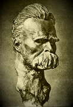

Philosophy Pages
| Dictionary | Study Guide | Logic | F A Q s | ||
|---|---|---|---|---|---|---|
| History | Timeline | Philosophers | Locke | |||
| Philosophy Pages
| Dictionary | Study Guide | Logic | F A Q s | ||
|---|---|---|---|---|---|---|
| History | Timeline | Philosophers | Locke | |||
|
Life and Works . . Transvaluation . . Slave Morality Bibliography Internet Sources |
Born the son of a Lutheran pastor in Röcken, Saxony, Friedrich Nietzsche was raised by female relatives after his father's death in 1849. He quickly abandoned his initial pursuit of theology in order to specialize in philology at Bonn and Leipzig, where he studied with Friedrich Ritschl.
Nietzsche's mastery of classical literature led to an early academic appointment at Basel and the publication of
Die Geburt der Tragödie aus dem Geiste der Musik
(The Birth of Tragedy) (1872), with its distinction between Apollonian and Dionysian cultures.
 When ill health forced an early end to his teaching career, Nietzsche began to produce the less scholarly, quasi-philosophical, and anti-religious works for which he is now best known, including
Menschliches, allzumenschliches
(Human, All Too Human) (1878),
Also Sprach Zarathustra
(Thus Spoke Zarathustra) (1883),
Die Fröhliche Wissenschaft
(The Gay Science) (1882), and
Jenseits von Gut und Böse
(Beyond Good and Evil) (1886).
Nietzsche never recovered from a serious physical and mental collapse he suffered in 1889; his Der Wille zur Macht (Will to Power) (1901) and the autobiographical
Ecce Homo
(Ecce Homo) (1908) were published posthumously.
When ill health forced an early end to his teaching career, Nietzsche began to produce the less scholarly, quasi-philosophical, and anti-religious works for which he is now best known, including
Menschliches, allzumenschliches
(Human, All Too Human) (1878),
Also Sprach Zarathustra
(Thus Spoke Zarathustra) (1883),
Die Fröhliche Wissenschaft
(The Gay Science) (1882), and
Jenseits von Gut und Böse
(Beyond Good and Evil) (1886).
Nietzsche never recovered from a serious physical and mental collapse he suffered in 1889; his Der Wille zur Macht (Will to Power) (1901) and the autobiographical
Ecce Homo
(Ecce Homo) (1908) were published posthumously.
Nietzsche sharply criticized the Greek tradition's over-emphasis on reason in his Die Götzendämmerung (Twilight of the Idols) (1889).  Reliance on abstract concepts in a quest for absolute truth, he supposed, is merely a symptom of the degenerate personalities of philosophers like Socrates. From this Nietzsche concluded that traditional philosophy and religion are both erroneous and harmful for human life; they enervate and degrade our native capacity for achievement.
Progress beyond the stultifying influence of philosophy, then, requires a thorough "revaluation of values." In Zur Geneologie der Moral (On the Genealogy of Morals) (1887) Nietzsche bitterly decried the slave morality enforced by social sanctions and religious guilt. Only rare, superior individuals—the noble ones, or Übermenschen—can rise above all moral distinctions to achieve a heroic life of truly human worth.
|
Recommended Reading:
Primary sources:
Secondary sources:
Additional on-line information about Nietzsche includes:
|